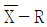
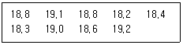

에너지관리기능장 (2018-03-31 기출문제)
1과목: 임의 구분
1. 증기배관의 관말부의 최종 분기 이후에서 트랩에 이르는 배관은 여분의 증기가 충분히 냉각되어 응축수가 될 수 있도록 보온피복을 하지 않은 나관 상태로 1.5m 설치하는 배관을 무엇이라고 하는가?
- 하트포트 접속법
- 리프트피팅
- 냉각레그
- 바이패스배관
(정답률: 81%)

2. 실제증발배수(kg증가/kg연료)가 3인 보일러의 시간당 연료소비량(kg/h)은? (단, 발생증기량은 1.2ton/h 이며, 효율은 89% 이다.)
- 300
- 340
- 356
- 400
(정답률: 52%)
3. 다음 중 습식 집진장치의 종류가 아닌 것은?
- 유수식
- 가압수식
- 백필터식
- 회전식
(정답률: 80%)
4. 보일러의 용량(ton/h)이 최소 얼마 이상이면 유량계를 설치해야 하는가?
- 0.5
- 1
- 1.5
- 2
(정답률: 69%)
5. 보일러 설치 시 유의사항으로 틀린 것은?
- 보일러의 저부하 운전을 방지하기 위해 사용압력은 특별한 경우 최고사용압력을 초과할 수 있도록 설치해야 한다.
- 기초가 약하여 내려앉거나 갈라지지 않아야 한다.
- 수관식 보일러의 경우 전열면을 청소할 수 있는 구멍이 있어야 한다.
- 강구조물은 빗물이나 증기에 의하여 부식이 되지 않도록 적절한 보호조치를 하여야 한다.
(정답률: 86%)
6. 보일러의 매연을 털어내는 매연분출장치의 종류가 아닌 것은?
- 롱리트랙터블(long retractable)형
- 숏리트랙터블(short retractable)형
- 정치 회전형
- 튜브형
(정답률: 80%)
7. 다음 중 유량조절 범위가 넓은 오일 연소용 버너는?
- 고압기류식 버너
- 저압공기식 버너
- 유압식 버너
- 회전식 버너
(정답률: 67%)
8. 효율이 80%인 보일러가 연소 150kg/h를 사용할 경우 손실열량(kcal/s)은? (단, 연료의 저위발열량은 8800kcal/kg 이다.)
- 49.3
- 58.8
- 68.7
- 73.3
(정답률: 44%)
9. 보일러 안전밸브의 크기는 호칭지름 25A 이상이어야 하나, 보일러 크기나 종류에 따라 20A 이상으로 할 수 있다. 호칭지름 20A 이상으로 할 수 있는 경우의 보일러가 아닌 것은?
- 최대 증발량 5t/h 이하의 관류 보일러
- 최고사용압력 0.1MPa 이하의 보일러
- 전열면적 10m2 이하의 보일러
- 소용량 강철제보일러
(정답률: 57%)
10. 공기예열기에 대한 설명으로 옳은 것은?
- 공기예열기를 설치하여도 연도에서 흡입하는 압력이 있으므로 운전에는 영향이 없다.
- LNG가스를 이용하는 경우에 산로점의 문제 때문에 배기가스 온도를 130℃ 이상을 유지한다.
- 연소 공기의 온도가 올라가면 배기가스 중의 NOx의 농도가 상승할 수 있으므로 주의가 요구된다.
- 공기예열기는 기체인 공기를 가열하므로 동일한 열량의 급수예열기에 비해 전열면적이 작다.
(정답률: 68%)
11. 보일러에 사용되는 자동제어계의 동작순서로 옳은 것은?
- 검출 → 비교 → 판단 → 조작
- 조작 → 비교 → 판단 → 검출
- 판단 → 비교 → 검출 → 조작
- 검출 → 조작 → 판단 → 비교
(정답률: 78%)
12. 열손실 난방부하와 관계가 없는 것은?
- 열관류율(kcal/m2·h·℃)
- 예열부하계수
- 전열면적(m2)
- 온도차(℃)
(정답률: 66%)
13. 보일러에서 연돌의 자연 통풍력을 증대하는 방법으로 옳은 것은?
- 연돌의 높이를 짧게 한다.
- 연돌의 단면적을 작게 시공한다.
- 연돌 내부, 외부 온도차를 작게 한다.
- 연도의 길이를 짧게 한다.
(정답률: 67%)
14. 다음 중 보일러의 안전장치 종류가 아닌 것은?
- 방출밸브
- 가용마개
- 드레인 콕
- 수면고저경보기
(정답률: 78%)
15. 기체연료의 특징에 대한 설명으로 틀린 것은?
- 연소효율이 높고 소량의 공기로도 완전연소가 가능하다.
- 연소가 균일하고 연소조절이 용이하다.
- 가스폭발 위험성이 있다.
- 유황 산화물이나 질소 산화물의 발생이 많다.
(정답률: 76%)
16. 태양열 보일러가 80W/m2 의 비율로 열을 흡수한다. 열효율이 75% 인 장치로 10kW의 동력을 얻으려면 전열면적(m2)은 얼마나 되어야 하는가?
- 216.7
- 166.7
- 149.1
- 52.8
(정답률: 52%)
17. 강철제보일러의 전열면적이 14m2 이하이고, 최고사용 압력이 0.35 MPa 이하일 때, 설치 시공 후 실시하는 수압시험압력은 얼마이어야 하는가?
- 최고사용압력의 2배
- 최고사용압력의 1.3배
- 최고사용압력의 1.5배
- 최고사용압력의 1.3배 + 0.3MPa
(정답률: 55%)
18. 다음 중 저위발열량(HL)을 구하는 식은? (단, Hh = 고위발열량(kcal/kg), h = 연료 1kg 중의 수소량(kg), w = 연료 1kg 중의 수분량(kg) 이다.)
- HL = Hh-600(h+9w)
- HL = Hh-600(h-9w)
- HL = Hh-600(9h+w)
- HL = Hh-600(9h-w)
(정답률: 60%)
19. 난방방식에 대한 설명으로 옳은 것은?
- 증기난방은 증발잠열을 이용하는 난방법으로 방열량을 조절할 수 있다.
- 중력환수식 증기난방법에서 리프트피팅(lift fitting)을 적용하면 환수를 위쪽으로 끌어 올릴 수 있다.
- 온수난방은 예열시간이 짧으므로 반응이 빠르지만 방열량을 조절할 수 없다.
- 복사난방은 쾌감도는 좋으나 하자발생 여부르 확인하기 어렵고 부하변동에 따라 즉각적인 대응이 어렵다.
(정답률: 64%)
20. 증기난방 설비 중 진공환수식 응축수 회수 방법에 대한 설명으로 틀린 것은?
- 환수관 내 유속이 다른 환수방식에 비해 빠르고 난방효과가 크다.
- 대규모 난방에 적합하다.
- 공기 빼기 밸브를 부착해야 한다.
- 환수관의 관경을 작게 할 수 있다.
(정답률: 65%)
2과목: 임의 구분
21. 다음 중 고압(50~300kg/cm2)에서 레이놀즈수가 클 때, 유체의 유량 측정에 가장 적합한 유량계는?
- 플로우 노즐 유량계
- 오리피스 유량계
- 벤튜리 유량계
- 피토우 유량계
(정답률: 54%)
22. 다음 중 방열기(radiator)의 사용 재질로 가장 거리가 먼 것은?
- 주철
- 강
- 알루미늄
- 황동
(정답률: 65%)
23. 지역난방의 특징에 대한 설명으로 틀린 것은?
- 각 건물에 보일러를 설치하는 경우에 비해 각 건물의 유효면적이 증대된다.
- 각 건물에 보일러를 설치하는 경우에 비해 열효율이 좋아진다.
- 설비의 고도화에 따라 도시매연이 감소된다.
- 열매체로 증기보다 온수를 사용하는 것이 관내 저항손실이 적으므로 주로 온수를 사용한다.
(정답률: 73%)
24. 보일러 안전관리 수칙에 대한 설명으로 가장 거리가 먼 것은?
- 안전밸브 및 저수위 연료차단장치는 정기적으로 작동상태를 확인한다.
- 연소실 내 잔류가스 배출을 위해 댐퍼의 개방상태를 확인한다.
- 보일러 연소상태를 수시 확인하고 적정 공기비를 유지한다.
- 금수온도를 수시로 점검하여 온도를 80℃ 이상으로 유지한다.
(정답률: 77%)
25. 연료의 연소 시 과잉 공기량에 대한 설명으로 옳은 것은?
- 실제 공기량과 같은 값이다.
- 실제 공기량에서 이론 공기량을 뺀 값이다.
- 이론 공기량에서 실제 공기량을 뺀 값이다.
- 이론 공기량과 실제 공기량을 더한 값이다.
(정답률: 66%)
26. 여러 가지 물리량에 대한 설명으로 틀린 것은?
- 밀도는 단위체적당의 중량이다.
- 비체적은 단위중량당의 체적이다.
- 비중은 표준 대기압에서 4℃ 물의 비중량에 대한 유체의 비중량의 비(比)이다.
- 유체의 압축률은 압력변화에 대한 체적변화의 비(比)이다.
(정답률: 57%)
27. 보일러의 건조보존법에서 질소가스를 사용할 때 질소가스의 보존압력(MPa)은?
- 0.06
- 0.3
- 0.12
- 0.015
(정답률: 65%)
28. 다음 중 보일러 손상의 종류와 발생 부위에 대한 연결로 틀린 것은?
- 압궤 : 노통 또는 화실
- 팽출 : 수관, 동체
- 균열 : 리벳구멍, 플랜지 이음부
- 수격작용 : 증기트랩 또는 기수분리기
(정답률: 65%)
29. 캐리오버(carry over)의 방지책이 아닌 것은?
- 보일러수의 염소이온을 높여야 한다.
- 수면이 비정상으로 높게 유지되지 않도록 한다.
- 압력을 규정압력으로 유지해야 한다.
- 부하를 급격히 증가시키지 않는다.
(정답률: 75%)
30. 급수예열기의 취급방법으로 틀린 것은?
- 바이패스 연도가 있는 경우에는 연소가스를 바이패스 시켜 물이 급수예열기 내를 유동하게 한 후 연소가스를 급수예열기 연도에 보낸다.
- 댐퍼조작은 급수예열기 연도의 입구댐퍼를 먼저 연 다음 출구댐퍼를 열고 최후에 바이패스 댐퍼를 닫는다.
- 바이패스 연도가 없는 경우에는 순환관을 이용하여 급수예열기 내의 물을 유동시킨다.
- 순환관이 없는 경우에는 적정량의 보일러수의 분출을 실시한다.
(정답률: 61%)
31. 인젝터의 급수 불량원인으로 가장 거리가 먼 것은?
- 노즐이 마모된 경우
- 급수온도가 50℃ 이상으로 높은 경우
- 증기압이 4kg/cm2 정도로 낮은 경우
- 흡입관에 공기유입이 유입된 경우
(정답률: 55%)
32. 보일러 내부에 부착된 페인트, 유지, 녹 등을 제거하기 위해 사용되는 약품은?
- 탄산소다(Na2CO3)
- 히드라진(N2H4)
- 염화칼슘(CaCl2)
- 탄산마그네슘(MgCO3)
(정답률: 58%)
33. 순수한 물 1 lb(파운드)를 표준대기앙서 1°F 높이는데 필요한 열량을 나타낼 때 쓰이는 단위는?
- Chu
- MPa
- Btu
- kcal
(정답률: 73%)
34. 보일러의 건식보존 시 사용되는 약품이 아닌 것은?
- 생석회
- 염화칼슘
- 소석회
- 활성알루미나
(정답률: 54%)
35. 기체의 정압비열과 정적비열의 관계에 대한 설명으로 옳은 것은?
- 정압비열이 정적비열보다 항상 작다.
- 정압비열이 정적비열보다 항상 크다.
- 정적비열과 정압비열은 항상 같다.
- 정압비열은 정적비열보다 클 수도 있고 작을 수도 있다.
(정답률: 70%)
36. 수관이나 동저부에 고열의 연소가스가 접촉하여 파열이 진행되는 순서는?
- 과열 → 가열 → 팽출 → 변형 → 파열
- 과열 → 가열 → 변형 → 팽출 → 파열
- 가열 → 과열 → 팽출 → 변형 → 파열
- 가열 → 과열 → 변형 → 팽출 → 파열
(정답률: 61%)
37. 액체 속에 잠겨 있는 곡면에 작용하는 합력을 구하기 위해서는 수평 및 수직분력으로 나누어 계산해야 한다. 이 중 수직분력에 관한 설명으로 옳은 것은?
- 곡면에 의해서 배제된 액체의 무게와 같다.
- 곡면의 수직 투영면에 비중량을 곱한 값이다.
- 중심에서 비중량, 압력, 면적을 곱한 값이다.
- 곡면 위에 있는 액체의 무게와 같다.
(정답률: 49%)
38. 유체의 원추 확대관에서 생기는 손실수두는?
- 속도에 비례한다.
- 속도에 반비례한다.
- 속도의 제곱에 비례한다.
- 속도의 제곱에 반비례한다.
(정답률: 62%)
39. 압력이 100kg/cm2인 습증기가 있다. 포화수의 엔탈피가 334 kcal/kg 이고, 건조포화증기 엔탈피가 652 kcal/kg, 건조도가 80% 일 때, 이 습증기의 엔탈피(kcal/kg)는?
- 427
- 575
- 588
- 641
(정답률: 57%)
40. 중유 연소 시 노내의 상태가 밝고 공기량이 과다할 때 화염의 색깔은?
- 보라색
- 회백색
- 오렌지색
- 적색
(정답률: 70%)
3과목: 임의 구분
41. 다음 중 중성 내화 벽돌에 속하는 것은?
- 탄소질
- 규석질
- 마그네시아질
- 샤모트질
(정답률: 48%)
42. 배관에 설치하는 신축 이음쇠의 종류가 아닌 것은?
- 루프형
- 벨로즈형
- 스위블형
- 게이트형
(정답률: 71%)
43. 주철의 일반적인 특징에 대한 설명으로 옳은 것은?
- 주철은 강에 비해 용융점이 높고 유동성이 나쁜 특성을 지니고 있다.
- 가단 주철은 마그네슘, 세륨 등을 소량 첨가하여 구상흑연으로 바꿔서 연성을 부여한 것이다.
- 흑연이 비교적 다량으로 석출되어 파면이 회색으로 보이고 흑연은 보통 편상으로 존재하는 것을 반주철이라 한다.
- 흑연의 형상을 미세, 균일하게 하기 위하여 Si, Ca-Si 분말을 첨가하여 흑연의 핵형성을 촉진시킨 것을 미하나이트 주철이라 한다.
(정답률: 67%)
44. 강관용 플랜지와 관과의 부착방법에 따른 분류에 대한 각각의 용도를 설명한 것으로 틀린 것은?
- 웰딩넥형(Welding neck type) – 저압 배관용
- 랩 조인트형(Lap joint type) – 고압 배관용
- 블라인드형(Blind type) – 관의 구멍 폐쇄용
- 나사형(Thread type) – 저압 배관용
(정답률: 56%)
45. 에너지이용 합리화법에 따라 검사기관의 장은 검사대상기기인 보일러의 검사를 받는 자에게 그 검사의 종류에 따라 필요한 사항에 대한 조치를 하게 할 수 있다. 그 조치에 해당되지 않는 것은?
- 기계적 시험의 준비
- 비파괴 검사의 준비
- 조립식인 검사대상기기의 조립 해체
- 단열재의 열전도 시험의 준비
(정답률: 65%)
46. 에너지이용 합리화법 따른 에너지관리지도결과, 에너지다소비사업자가 개선명령을 받은 경우에는 개선명령일부터 며칠 이내에 개선계획을 수립·제출하여야 하는가?
- 60일
- 45일
- 30일
- 15일
(정답률: 66%)
47. 천연고무와 비슷한 성질을 가진 합성고무로서 내열성을 위주로 만들어진 알칼리성이며, 내열도가 –46~121℃ 사이에서 사용되는 패킹재료는?
- 네오프랜
- 석면
- 암면
- 펠트
(정답률: 71%)
48. 규소토질 단열재의 특징에 대한 설명으로 틀린 것은?
- 압축강도(5~30 kg/cm2), 내마모싱, 내스폴링성이 적다.
- 재가열·수축열이 크다.
- 안전 사용 온도가 1300~1500℃ 이다.
- 기공율은 70~80% 정도이며, 350℃ 정도에서 열전도율은 0.12~0.2 kcal/m·h·℃ 이다.
(정답률: 62%)
49. 전동밸브에 대한 설명으로 옳은 것은?
- 회전운동을 링크 가구에 의한 왕복운동으로 바꾸어서 밸브를 개폐한다.
- 고압유체를 취급하는 배과이나 압력용기에 주로 설치한다.
- 실린더의 왕복운동을 캠장치를 이용하여 회전운동으로 바꾸어 밸브를 개폐한다.
- 고압관가 저압관 사이에 설치하며 밸브의 리프트를 제어하여 유량을 조절한다.
(정답률: 61%)
50. 다음 중 아크 용접, 가스 용접에 있어서 용접 중에 비산하는 슬래그 및 금속 입자를 의미하는 용어는?
- 자기 쏠림(magnetic blow)
- 핀치 효과(pinch effect)
- 굴하 작용(digging action)
- 스패터(spatter)
(정답률: 73%)
51. 응축수의 부력을 이용해 밸브를 개폐하여 간헐적으로 응축수를 배출하는 증기트랩은?
- 벨로즈 트랩
- 디스크 트랩
- 오리피스 트랩
- 버킷 트랩
(정답률: 66%)
52. 배관의 높이를 관의 중심을 기준으로 표시할 때 표시 기호로 옳은 것은? (단, 기준선은 그 지방의 해수면으로 한다.)
- EL
- GL
- TOP
- FL
(정답률: 70%)
53. 에너지이용 합리화법에 따라 검사에 불합격한 검사대상기기를 사용한 자에 대한 벌칙기준은?
- 1년 이하의 징역 또는 1천만원 이하의 벌금
- 2년 이하의 징역 또는 2천만원 이하의 벌금
- 5백만원 이하의 벌금
- 2천만원 이하의 벌금
(정답률: 63%)
54. 펌프 등에서 발생하는 진동을 억제하는데 필욯나 배관 지지구는?
- 행거
- 레스트레인트
- 브레이스
- 서포트
(정답률: 65%)
55. Ralph M. Barnes 교수가 제시한 동작경제의 원칙 중 작업장 배치에 관한 원칙(Arrangement of the workplace)에 해당되지 않는 것은?
- 가급적이면 낙하식 운반방법을 이용한다.
- 모든 공구나 재료는 지정되 위치에 있도록 한다.
- 적절한 조명을 하여 작업자가 잘 보면서 작업할 수 있도록 한다.
- 가급적 용이하고 자연스런 리듬을 타고 일할 수 있도록 작업을 구성하여야 한다.
(정답률: 65%)
56. 직물, 금속, 유리 등의 일정 단위 중 나타나는 홈의 수, 핀홀 수 등 부적합수에 관한 관리도를 작성하려면 가장 적합한 관리도는?
- c 관리도
- np 관리도
- p 관리도

관리도
(정답률: 58%)
57. 어떤 회사의 매출액이 80000원, 고정비가 15000원, 변동비가 40000 원일 때 순익분기점 매출액은 얼마인가?
- 25000원
- 30000원
- 40000원
- 55000원
(정답률: 59%)
58. 다음 데이터의 제곱합(sum of squares)은 약 얼마인가?

- 0.129
- 0.338
- 0.359
- 1.029
(정답률: 52%)
59. 전수검사와 샘플링검사에 관한 설명으로 맞는 것은?
- 파괴검사의 경우에는 전수검사를 적용한다.
- 검사항목이 많을 경우 전수검사보다 샘플링검사가 유리하다.
- 샘플링검사는 부적합품이 섞여 들어가서는 안되는 경우에 적용한다.
- 생산자에게 품질향상의 자극을 주고 싶을 경우 전수검사가 샘플링검사보다 더 효과적이다.
(정답률: 72%)
60. 국제 표준화의 의의를 지적한 설명 중 직접적인 효과로 보기 어려운 것은?
- 국제간 규격통일로 상호 이익도모
- KS 표시품 수출 시 상대국에서 품질인증
- 개발도상국에 대한 기술개발의 촉진을 유도
- 국가 간의 규격상이로 인한 무역장벽의 제거
(정답률: 67%)